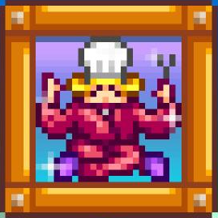

<div class="message_board_title_lg">Gourmet Chef Achievement</div>
<div class="message_paper_board_lg base_font" style="display:inline-block;">
    

    <div style="float:left;">
        A simple achievement, cook every recipe in the game.
    </div>
    <br />
    <br />
    <br />
    <br />

    <u>Helpful Links</u>
    <ul>
        <li><a href="https://steamcommunity.com/sharedfiles/filedetails/?id=804756730" target="_blank">Gourmet Chef Achievement: Timely Ingredient Gathering</a>: An easy to follow guide to completing this achievement. (Updated for 1.5)(Hosted on Steam)</li>
    </ul>
    <br /><br />
    <a href="../index.html"></a>
    <div style="float:right;"><a href="/Collection"></a></div>
</div>